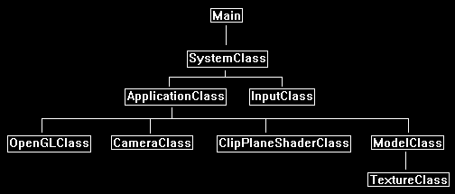

This tutorial will cover how to use clipping planes in OpenGL 4.0 using GLSL and C++.
The code in this tutorial is based on the previous tutorials.
Clip planes are generally used to truncate geometry along a given plane in 3D space.
The most common example that most people will be familiar with is the near and far clipping planes that we setup when creating a view port.
The far plane of the view port clips any geometry that goes beyond it so that we are not drawing the entire contents of massive 3D scenes.
In this tutorial we will cover how to create a clip plane anywhere in your scene to cull any geometry that passes that plane.
Note that clip planes combined with render to texture can produce some very powerful effects that we will cover in other tutorials.
Framework
The frame work has been modified to use the new ClipPlaneShaderClass.
This class is just a slight rewrite of the TextureShaderClass.

Clipplane.vs
The clip plane GLSL files are just the basic texture shaders slightly modified to handle a single clip plane.
////////////////////////////////////////////////////////////////////////////////
// Filename: clipplane.vs
////////////////////////////////////////////////////////////////////////////////
#version 400
/////////////////////
// INPUT VARIABLES //
/////////////////////
in vec3 inputPosition;
in vec2 inputTexCoord;
//////////////////////
// OUTPUT VARIABLES //
//////////////////////
out vec2 texCoord;
Here is the clip plane semantic that is needed as input to the pixel shader.
out float gl_ClipDistance[1];
///////////////////////
// UNIFORM VARIABLES //
///////////////////////
uniform mat4 worldMatrix;
uniform mat4 viewMatrix;
uniform mat4 projectionMatrix;
We have a clip plane 4 float vector so that outside objects can set where the clip plane is located and which side of the plane will be clipped.
The first three floats specify the location of the clip plane, the fourth float indicates the position.
For example, if it holds (0.0f, 1.0f, 0.0f, -5.0f) then it means that it will clip everything beneath the Y axis and this clipping will start at the height of 5.0.
So, any pixel in the scene that is below 5.0 on the Y-axis will never be drawn.
In this tutorial we will use the value (0.0f, -1.0f, 0.0f, 0.0f) which means that anything above 0.0 on the Y axis will be culled.
uniform vec4 clipPlane;
////////////////////////////////////////////////////////////////////////////////
// Vertex Shader
////////////////////////////////////////////////////////////////////////////////
void main(void)
{
// Calculate the position of the vertex against the world, view, and projection matrices.
gl_Position = vec4(inputPosition, 1.0f) * worldMatrix;
gl_Position = gl_Position * viewMatrix;
gl_Position = gl_Position * projectionMatrix;
// Store the texture coordinates for the pixel shader.
texCoord = inputTexCoord;
To setup the clip plane for the pixel shader input we do a dot product of the input vertex in world space against the clip plane.
The clip plane will now be active and the pixel shader will not draw anything that this clip plane is culling.
// Set the clipping plane.
gl_ClipDistance[0] = dot(vec4(inputPosition, 1.0f) * worldMatrix, clipPlane);
}
Clipplane.ps
The pixel shader doesn't require any changes, but note that the clip plane is now active and the pixel shader will take the clip plane into account before processing any pixels.
////////////////////////////////////////////////////////////////////////////////
// Filename: clipplane.ps
////////////////////////////////////////////////////////////////////////////////
#version 400
/////////////////////
// INPUT VARIABLES //
/////////////////////
in vec2 texCoord;
//////////////////////
// OUTPUT VARIABLES //
//////////////////////
out vec4 outputColor;
///////////////////////
// UNIFORM VARIABLES //
///////////////////////
uniform sampler2D shaderTexture;
////////////////////////////////////////////////////////////////////////////////
// Pixel Shader
////////////////////////////////////////////////////////////////////////////////
void main(void)
{
vec4 textureColor;
// Sample the pixel color from the texture using the sampler at this texture coordinate location.
textureColor = texture(shaderTexture, texCoord);
outputColor = textureColor;
}
Clipplaneshaderclass.h
The ClipPlaneShaderClass is just the TextureShaderClass modified to handle clipping.
////////////////////////////////////////////////////////////////////////////////
// Filename: clipplaneshaderclass.h
////////////////////////////////////////////////////////////////////////////////
#ifndef _CLIPPLANESHADERCLASS_H_
#define _CLIPPLANESHADERCLASS_H_
//////////////
// INCLUDES //
//////////////
#include <iostream>
using namespace std;
///////////////////////
// MY CLASS INCLUDES //
///////////////////////
#include "openglclass.h"
////////////////////////////////////////////////////////////////////////////////
// Class name: ClipPlaneShaderClass
////////////////////////////////////////////////////////////////////////////////
class ClipPlaneShaderClass
{
public:
ClipPlaneShaderClass();
ClipPlaneShaderClass(const ClipPlaneShaderClass&);
~ClipPlaneShaderClass();
bool Initialize(OpenGLClass*);
void Shutdown();
bool SetShaderParameters(float*, float*, float*, float*);
private:
bool InitializeShader(char*, char*);
void ShutdownShader();
char* LoadShaderSourceFile(char*);
void OutputShaderErrorMessage(unsigned int, char*);
void OutputLinkerErrorMessage(unsigned int);
private:
OpenGLClass* m_OpenGLPtr;
unsigned int m_vertexShader;
unsigned int m_fragmentShader;
unsigned int m_shaderProgram;
};
#endif
Clipplaneshaderclass.cpp
////////////////////////////////////////////////////////////////////////////////
// Filename: clipplaneshaderclass.cpp
////////////////////////////////////////////////////////////////////////////////
#include "clipplaneshaderclass.h"
ClipPlaneShaderClass::ClipPlaneShaderClass()
{
m_OpenGLPtr = 0;
}
ClipPlaneShaderClass::ClipPlaneShaderClass(const ClipPlaneShaderClass& other)
{
}
ClipPlaneShaderClass::~ClipPlaneShaderClass()
{
}
bool ClipPlaneShaderClass::Initialize(OpenGLClass* OpenGL)
{
char vsFilename[128];
char psFilename[128];
bool result;
// Store the pointer to the OpenGL object.
m_OpenGLPtr = OpenGL;
We load the clipplane.vs and clipplane.ps GLSL shader files here.
// Set the location and names of the shader files.
strcpy(vsFilename, "../Engine/clipplane.vs");
strcpy(psFilename, "../Engine/clipplane.ps");
// Initialize the vertex and pixel shaders.
result = InitializeShader(vsFilename, psFilename);
if(!result)
{
return false;
}
return true;
}
void ClipPlaneShaderClass::Shutdown()
{
// Shutdown the shader.
ShutdownShader();
// Release the pointer to the OpenGL object.
m_OpenGLPtr = 0;
return;
}
bool ClipPlaneShaderClass::InitializeShader(char* vsFilename, char* fsFilename)
{
const char* vertexShaderBuffer;
const char* fragmentShaderBuffer;
int status;
// Load the vertex shader source file into a text buffer.
vertexShaderBuffer = LoadShaderSourceFile(vsFilename);
if(!vertexShaderBuffer)
{
return false;
}
// Load the fragment shader source file into a text buffer.
fragmentShaderBuffer = LoadShaderSourceFile(fsFilename);
if(!fragmentShaderBuffer)
{
return false;
}
// Create a vertex and fragment shader object.
m_vertexShader = m_OpenGLPtr->glCreateShader(GL_VERTEX_SHADER);
m_fragmentShader = m_OpenGLPtr->glCreateShader(GL_FRAGMENT_SHADER);
// Copy the shader source code strings into the vertex and fragment shader objects.
m_OpenGLPtr->glShaderSource(m_vertexShader, 1, &vertexShaderBuffer, NULL);
m_OpenGLPtr->glShaderSource(m_fragmentShader, 1, &fragmentShaderBuffer, NULL);
// Release the vertex and fragment shader buffers.
delete [] vertexShaderBuffer;
vertexShaderBuffer = 0;
delete [] fragmentShaderBuffer;
fragmentShaderBuffer = 0;
// Compile the shaders.
m_OpenGLPtr->glCompileShader(m_vertexShader);
m_OpenGLPtr->glCompileShader(m_fragmentShader);
// Check to see if the vertex shader compiled successfully.
m_OpenGLPtr->glGetShaderiv(m_vertexShader, GL_COMPILE_STATUS, &status);
if(status != 1)
{
// If it did not compile then write the syntax error message out to a text file for review.
OutputShaderErrorMessage(m_vertexShader, vsFilename);
return false;
}
// Check to see if the fragment shader compiled successfully.
m_OpenGLPtr->glGetShaderiv(m_fragmentShader, GL_COMPILE_STATUS, &status);
if(status != 1)
{
// If it did not compile then write the syntax error message out to a text file for review.
OutputShaderErrorMessage(m_fragmentShader, fsFilename);
return false;
}
// Create a shader program object.
m_shaderProgram = m_OpenGLPtr->glCreateProgram();
// Attach the vertex and fragment shader to the program object.
m_OpenGLPtr->glAttachShader(m_shaderProgram, m_vertexShader);
m_OpenGLPtr->glAttachShader(m_shaderProgram, m_fragmentShader);
// Bind the shader input variables.
m_OpenGLPtr->glBindAttribLocation(m_shaderProgram, 0, "inputPosition");
m_OpenGLPtr->glBindAttribLocation(m_shaderProgram, 1, "inputTexCoord");
// Link the shader program.
m_OpenGLPtr->glLinkProgram(m_shaderProgram);
// Check the status of the link.
m_OpenGLPtr->glGetProgramiv(m_shaderProgram, GL_LINK_STATUS, &status);
if(status != 1)
{
// If it did not link then write the syntax error message out to a text file for review.
OutputLinkerErrorMessage(m_shaderProgram);
return false;
}
return true;
}
void ClipPlaneShaderClass::ShutdownShader()
{
// Detach the vertex and fragment shaders from the program.
m_OpenGLPtr->glDetachShader(m_shaderProgram, m_vertexShader);
m_OpenGLPtr->glDetachShader(m_shaderProgram, m_fragmentShader);
// Delete the vertex and fragment shaders.
m_OpenGLPtr->glDeleteShader(m_vertexShader);
m_OpenGLPtr->glDeleteShader(m_fragmentShader);
// Delete the shader program.
m_OpenGLPtr->glDeleteProgram(m_shaderProgram);
return;
}
char* ClipPlaneShaderClass::LoadShaderSourceFile(char* filename)
{
FILE* filePtr;
char* buffer;
long fileSize, count;
int error;
// Open the shader file for reading in text modee.
filePtr = fopen(filename, "r");
if(filePtr == NULL)
{
return 0;
}
// Go to the end of the file and get the size of the file.
fseek(filePtr, 0, SEEK_END);
fileSize = ftell(filePtr);
// Initialize the buffer to read the shader source file into, adding 1 for an extra null terminator.
buffer = new char[fileSize + 1];
// Return the file pointer back to the beginning of the file.
fseek(filePtr, 0, SEEK_SET);
// Read the shader text file into the buffer.
count = fread(buffer, 1, fileSize, filePtr);
if(count != fileSize)
{
return 0;
}
// Close the file.
error = fclose(filePtr);
if(error != 0)
{
return 0;
}
// Null terminate the buffer.
buffer[fileSize] = '\0';
return buffer;
}
void ClipPlaneShaderClass::OutputShaderErrorMessage(unsigned int shaderId, char* shaderFilename)
{
long count;
int logSize, error;
char* infoLog;
FILE* filePtr;
// Get the size of the string containing the information log for the failed shader compilation message.
m_OpenGLPtr->glGetShaderiv(shaderId, GL_INFO_LOG_LENGTH, &logSize);
// Increment the size by one to handle also the null terminator.
logSize++;
// Create a char buffer to hold the info log.
infoLog = new char[logSize];
// Now retrieve the info log.
m_OpenGLPtr->glGetShaderInfoLog(shaderId, logSize, NULL, infoLog);
// Open a text file to write the error message to.
filePtr = fopen("shader-error.txt", "w");
if(filePtr == NULL)
{
cout << "Error opening shader error message output file." << endl;
return;
}
// Write out the error message.
count = fwrite(infoLog, sizeof(char), logSize, filePtr);
if(count != logSize)
{
cout << "Error writing shader error message output file." << endl;
return;
}
// Close the file.
error = fclose(filePtr);
if(error != 0)
{
cout << "Error closing shader error message output file." << endl;
return;
}
// Notify the user to check the text file for compile errors.
cout << "Error compiling shader. Check shader-error.txt for error message. Shader filename: " << shaderFilename << endl;
return;
}
void ClipPlaneShaderClass::OutputLinkerErrorMessage(unsigned int programId)
{
long count;
FILE* filePtr;
int logSize, error;
char* infoLog;
// Get the size of the string containing the information log for the failed shader compilation message.
m_OpenGLPtr->glGetProgramiv(programId, GL_INFO_LOG_LENGTH, &logSize);
// Increment the size by one to handle also the null terminator.
logSize++;
// Create a char buffer to hold the info log.
infoLog = new char[logSize];
// Now retrieve the info log.
m_OpenGLPtr->glGetProgramInfoLog(programId, logSize, NULL, infoLog);
// Open a file to write the error message to.
filePtr = fopen("linker-error.txt", "w");
if(filePtr == NULL)
{
cout << "Error opening linker error message output file." << endl;
return;
}
// Write out the error message.
count = fwrite(infoLog, sizeof(char), logSize, filePtr);
if(count != logSize)
{
cout << "Error writing linker error message output file." << endl;
return;
}
// Close the file.
error = fclose(filePtr);
if(error != 0)
{
cout << "Error closing linker error message output file." << endl;
return;
}
// Pop a message up on the screen to notify the user to check the text file for linker errors.
cout << "Error linking shader program. Check linker-error.txt for message." << endl;
return;
}
The SetShaderParameters function takes as input a float[4] array named clipPlane which contains the clipping plane for this shader.
bool ClipPlaneShaderClass::SetShaderParameters(float* worldMatrix, float* viewMatrix, float* projectionMatrix, float* clipPlane)
{
float tpWorldMatrix[16], tpViewMatrix[16], tpProjectionMatrix[16];
int location;
// Transpose the matrices to prepare them for the shader.
m_OpenGLPtr->MatrixTranspose(tpWorldMatrix, worldMatrix);
m_OpenGLPtr->MatrixTranspose(tpViewMatrix, viewMatrix);
m_OpenGLPtr->MatrixTranspose(tpProjectionMatrix, projectionMatrix);
// Install the shader program as part of the current rendering state.
m_OpenGLPtr->glUseProgram(m_shaderProgram);
// Set the world matrix in the vertex shader.
location = m_OpenGLPtr->glGetUniformLocation(m_shaderProgram, "worldMatrix");
if(location == -1)
{
cout << "World matrix not set." << endl;
}
m_OpenGLPtr->glUniformMatrix4fv(location, 1, false, tpWorldMatrix);
// Set the view matrix in the vertex shader.
location = m_OpenGLPtr->glGetUniformLocation(m_shaderProgram, "viewMatrix");
if(location == -1)
{
cout << "View matrix not set." << endl;
}
m_OpenGLPtr->glUniformMatrix4fv(location, 1, false, tpViewMatrix);
// Set the projection matrix in the vertex shader.
location = m_OpenGLPtr->glGetUniformLocation(m_shaderProgram, "projectionMatrix");
if(location == -1)
{
cout << "Projection matrix not set." << endl;
}
m_OpenGLPtr->glUniformMatrix4fv(location, 1, false, tpProjectionMatrix);
We set the clipping plane in the vertex shader here.
// Set the clip plane in the vertex shader.
location = m_OpenGLPtr->glGetUniformLocation(m_shaderProgram, "clipPlane");
if(location == -1)
{
cout << "Clip plane not set." << endl;
}
m_OpenGLPtr->glUniform4fv(location, 1, clipPlane);
// Set the texture in the pixel shader to use the data from the first texture unit.
location = m_OpenGLPtr->glGetUniformLocation(m_shaderProgram, "shaderTexture");
if(location == -1)
{
cout << "Shader texture not set." << endl;
}
m_OpenGLPtr->glUniform1i(location, 0);
return true;
}
Applicationclass.h
The ApplicationClass has the clipplaneshaderclass.h included and a new ClipPlaneShaderClass variable.
////////////////////////////////////////////////////////////////////////////////
// Filename: applicationclass.h
////////////////////////////////////////////////////////////////////////////////
#ifndef _APPLICATIONCLASS_H_
#define _APPLICATIONCLASS_H_
/////////////
// GLOBALS //
/////////////
const bool FULL_SCREEN = false;
const bool VSYNC_ENABLED = true;
const float SCREEN_NEAR = 0.3f;
const float SCREEN_DEPTH = 1000.0f;
///////////////////////
// MY CLASS INCLUDES //
///////////////////////
#include "inputclass.h"
#include "openglclass.h"
#include "modelclass.h"
#include "cameraclass.h"
#include "clipplaneshaderclass.h"
////////////////////////////////////////////////////////////////////////////////
// Class Name: ApplicationClass
////////////////////////////////////////////////////////////////////////////////
class ApplicationClass
{
public:
ApplicationClass();
ApplicationClass(const ApplicationClass&);
~ApplicationClass();
bool Initialize(Display*, Window, int, int);
void Shutdown();
bool Frame(InputClass*);
private:
bool Render(float);
private:
OpenGLClass* m_OpenGL;
ModelClass* m_Model;
CameraClass* m_Camera;
ClipPlaneShaderClass* m_ClipPlaneShader;
};
#endif
Applicationclass.cpp
////////////////////////////////////////////////////////////////////////////////
// Filename: applicationclass.cpp
////////////////////////////////////////////////////////////////////////////////
#include "applicationclass.h"
ApplicationClass::ApplicationClass()
{
m_OpenGL = 0;
m_Model = 0;
m_Camera = 0;
m_ClipPlaneShader = 0;
}
ApplicationClass::ApplicationClass(const ApplicationClass& other)
{
}
ApplicationClass::~ApplicationClass()
{
}
bool ApplicationClass::Initialize(Display* display, Window win, int screenWidth, int screenHeight)
{
char modelFilename[128];
char textureFilename[128];
bool result;
// Create and initialize the OpenGL object.
m_OpenGL = new OpenGLClass;
result = m_OpenGL->Initialize(display, win, screenWidth, screenHeight, SCREEN_NEAR, SCREEN_DEPTH, VSYNC_ENABLED);
if(!result)
{
cout << "Error: Could not initialize the OpenGL object." << endl;
return false;
}
// Create and initialize the camera object.
m_Camera = new CameraClass;
m_Camera->SetPosition(0.0f, 0.0f, -10.0f);
m_Camera->Render();
// Set the file name of the model.
strcpy(modelFilename, "../Engine/data/cube.txt");
// Set the file name of the texture.
strcpy(textureFilename, "../Engine/data/stone01.tga");
// Create and initialize the model object.
m_Model = new ModelClass;
result = m_Model->Initialize(m_OpenGL, modelFilename, textureFilename, false, NULL, false, NULL, false);
if(!result)
{
cout << "Error: Could not initialize the model object." << endl;
return false;
}
The new ClipPlaneShaderClass object is created here.
// Create and initialize the clip plane shader object.
m_ClipPlaneShader = new ClipPlaneShaderClass;
result = m_ClipPlaneShader->Initialize(m_OpenGL);
if(!result)
{
cout << "Error: Could not initialize the clip plane shader object." << endl;
return false;
}
return true;
}
void ApplicationClass::Shutdown()
{
We release the new ClipPlaneShaderClass object here.
// Release the clip plane shader object.
if(m_ClipPlaneShader)
{
m_ClipPlaneShader->Shutdown();
delete m_ClipPlaneShader;
m_ClipPlaneShader = 0;
}
// Release the model object.
if(m_Model)
{
m_Model->Shutdown();
delete m_Model;
m_Model = 0;
}
// Release the camera object.
if(m_Camera)
{
delete m_Camera;
m_Camera = 0;
}
// Release the OpenGL object.
if(m_OpenGL)
{
m_OpenGL->Shutdown();
delete m_OpenGL;
m_OpenGL = 0;
}
return;
}
bool ApplicationClass::Frame(InputClass* Input)
{
static float rotation = 360.0f;
bool result;
// Check if the escape key has been pressed, if so quit.
if(Input->IsEscapePressed() == true)
{
return false;
}
// Update the rotation variable each frame.
rotation -= 0.0174532925f * 1.0f;
if(rotation <= 0.0f)
{
rotation += 360.0f;
}
// Render the graphics scene.
result = Render(rotation);
if(!result)
{
return false;
}
return true;
}
bool ApplicationClass::Render(float rotation)
{
float worldMatrix[16], viewMatrix[16], projectionMatrix[16];
float clipPlane[4];
bool result;
Create a clip plane first.
This clip plane will truncate anything below 0.0 on the Y axis.
// Setup a clipping plane.
clipPlane[0] = 0.0f;
clipPlane[1] = -1.0f;
clipPlane[2] = 0.0f;
clipPlane[3] = 0.0f;
// Clear the buffers to begin the scene.
m_OpenGL->BeginScene(0.0f, 0.0f, 0.0f, 1.0f);
// Get the world, view, and projection matrices from the opengl and camera objects.
m_OpenGL->GetWorldMatrix(worldMatrix);
m_Camera->GetViewMatrix(viewMatrix);
m_OpenGL->GetProjectionMatrix(projectionMatrix);
// Rotate the world matrix by the rotation value so that the cube will spin.
m_OpenGL->MatrixRotationY(worldMatrix, rotation);
Now enable clipping in the OpenGL state.
// Enable clip planes in OpenGL.
m_OpenGL->EnableClipping();
Now draw the spinning cube using the clip plane shader.
It should now cut off the top half of the cube.
// Set the clip plane shader as the current shader program and set the matrices and clip plane that it will use for rendering.
result = m_ClipPlaneShader->SetShaderParameters(worldMatrix, viewMatrix, projectionMatrix, clipPlane);
if(!result)
{
return false;
}
// Render the model.
m_Model->SetTexture1(0);
m_Model->Render();
And finally disable clipping in the OpenGL state.
// Disable clip planes in OpenGL.
m_OpenGL->DisableClipping();
// Present the rendered scene to the screen.
m_OpenGL->EndScene();
return true;
}
Summary
We now have a modified texture shader that will cull pixels based on clip planes that we've created.

To Do Exercises
1. Recompile the code and you should get a spinning cube cut in half on the Y axis. Press escape to quit.
2. Load the sphere model instead of the cube model.
3. Change the clip plane to cull different parts of the model on different heights and different planes.
Source Code
Source Code and Data Files: gl4linuxtut27_src.tar.gz